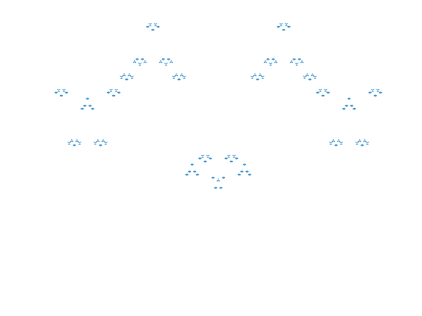
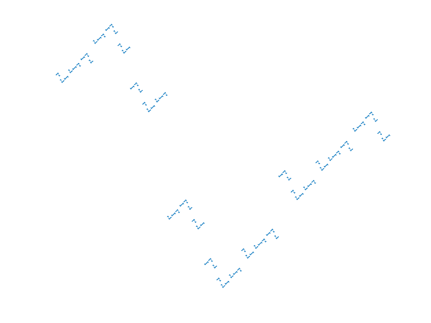
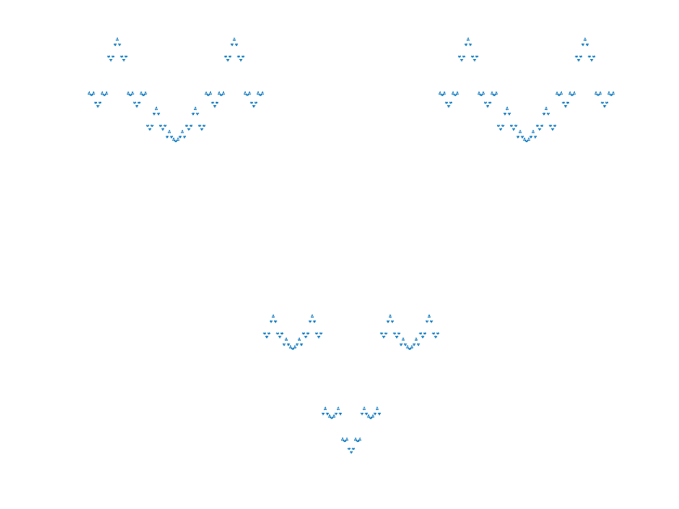
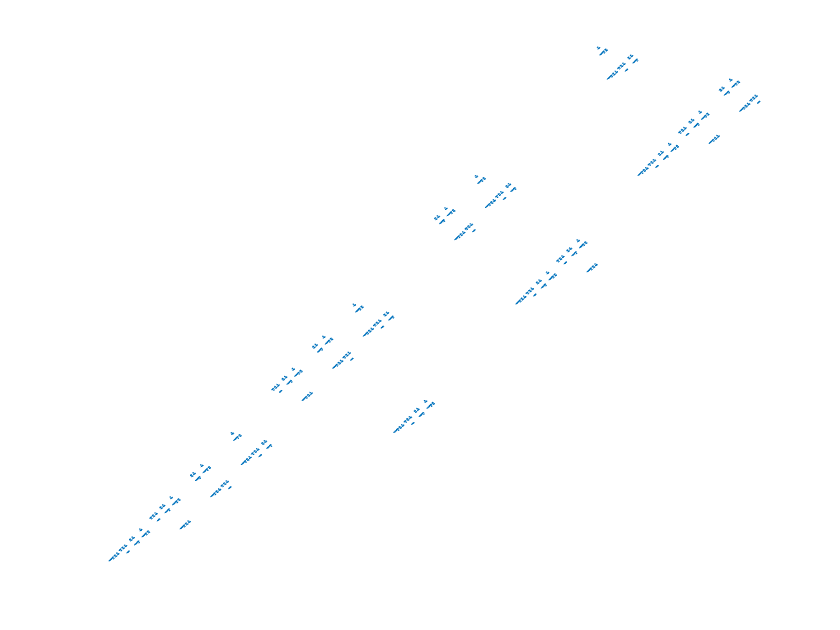
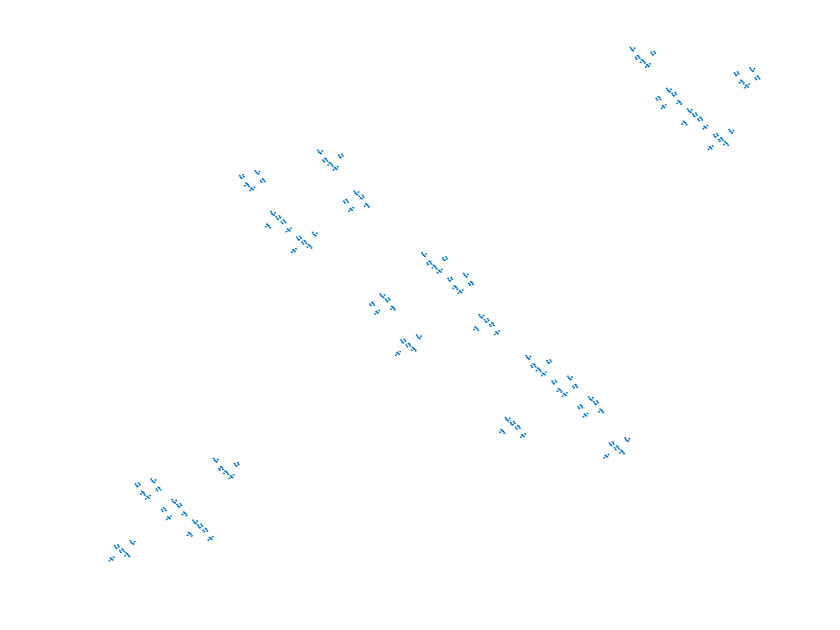
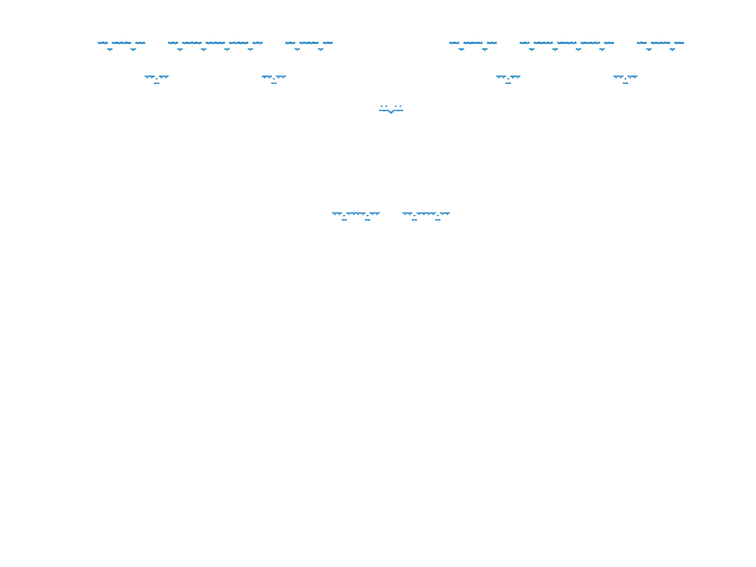
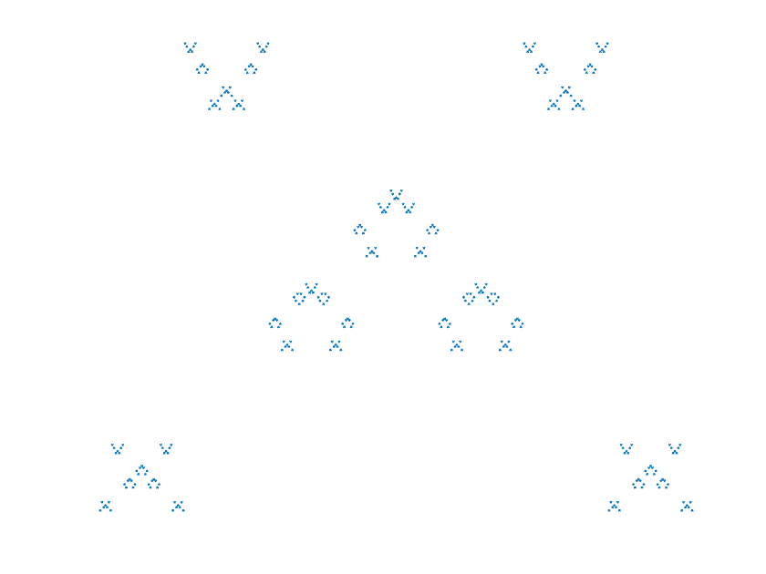
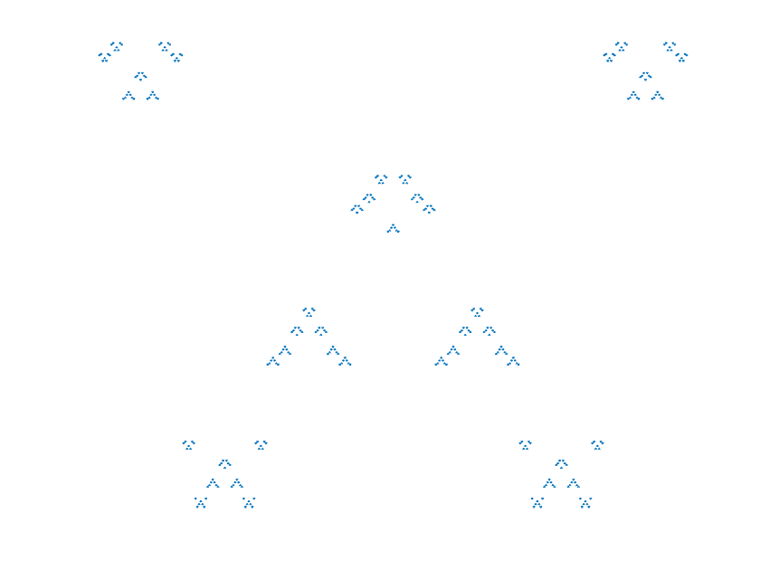

The algorithm that creates these fractals is similar to the one described here. This algorithm takes as input a zeromap, so called because it is what 0 will map to. The zeromap should be a sequence of integers from 0 to n-1, where n is the length of the sequence. The map for some other integer, k, is mod(zeromap+k,n). Using these maps, we can recursively expand the zeromap; notice that the sequence will lengthen by a factor of n after each iteration. Let the number of times the sequence has been expanded be m. In the limit of as m approaches infinity, each digit in the sequence corresponds to a point in the fractal; the horizontal position of each point is determined by their index. To make a fractal from this sequence, we also need to compute a verticle position for each point. At first, each point begins on the horizontal axis. After each expansion, each point is moved up by \(k*n^{-m}\), and the verticle positions of points are inherited from the point that mapped to them in the previous sequence.







